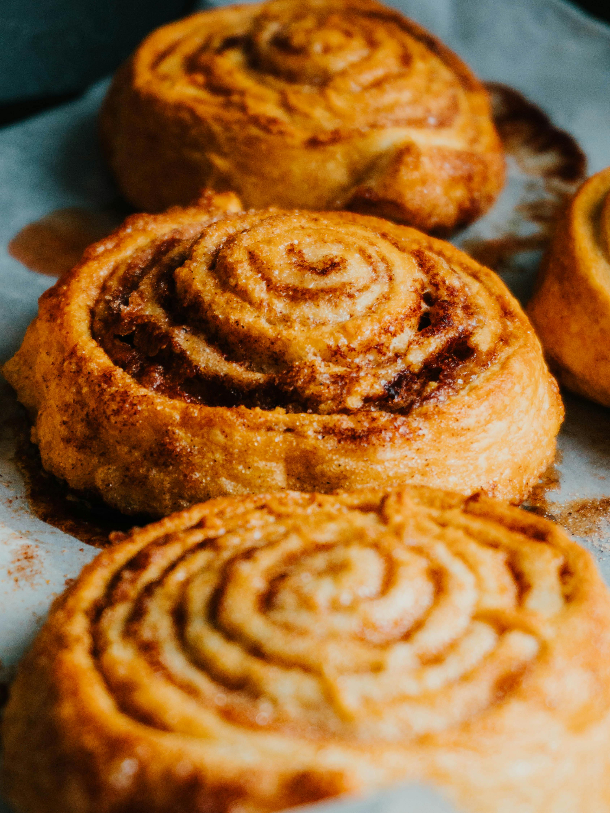

Cinnamon Rolls

Image by Pexels
Description
These easy cinnamon rolls from scratch are perfect for yeast beginners because they only require 1 rise. Each cinnamon roll is extra soft with the most delicious cinnamon swirl! The rolls freeze beautifully, so this is a great make-ahead recipe, especially for planning ahead for holidays or the next time you need a special breakfast. Choose from a few easy icing flavors to top the warm & gooey rolls.
Ingredients
Dough
- 2 3/4 cups flour
- 1/4 cup sugar
- 1/2 teaspoon salt
- 3/4 cup whole milk
- 3 tablespoons butter
- 1 large egg
- 1 packet instant yeast
Filling
- 3 tablespoons softened butter
- 1/3 cup brown sugar
- 1 tablespoon ground cinnamon
Cream Cheese Icing
- 4 ounces cream cheese
- 2 tablespoons softened butter
- 2/3 confectioners' sugar
- 1 teaspoon vanilla extract
Steps
- Mix your dry ingredients together in a big bowl.
- Warm the milk and butter together, and then whisk in the yeast until it has dissolved
- Pour this mixture over the dry ingredients, add the egg and then mix everything together.
- Transfer dough to your work surface, and then knead by hand for 3 minutes until a soft dough forms. Let the dough rest for 10 minutes as you prepare the filling.
- Roll out the dough and then top with softened butter and the brown sugar & cinnamon mixture.
- Roll up the dough and then use your sharpest knife to cut into 10-12 rolls. Arrange your rolls in a lightly greased 9-inch or 10-inch pan.
- Preheat the oven to 375°F (190°C). Bake for 24-27 minutes, or until lightly browned.
- Make the icing: In a medium bowl using a mixer, beat the cream cheese on high speed until smooth and creamy. Add the butter and beat until smooth, then beat in the confectioners’ sugar and vanilla. Spread the icing over the warm rolls and serve immediately.
- Cover leftover frosted or unfrosted rolls tightly and store at room temperature for up to 2 days or in the refrigerator for up to 5 days.
Home